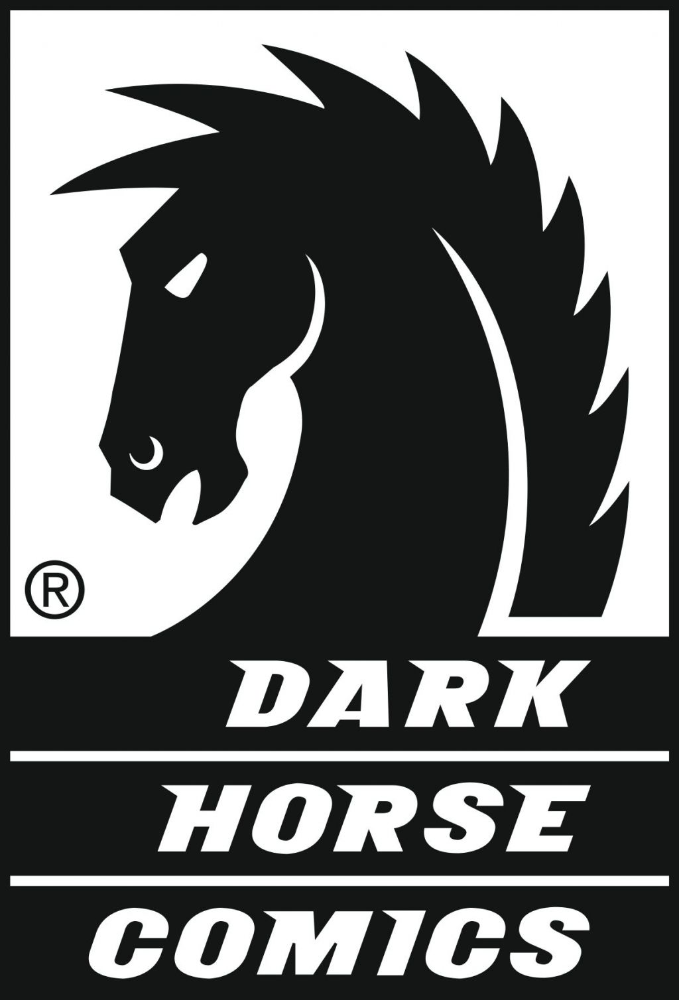
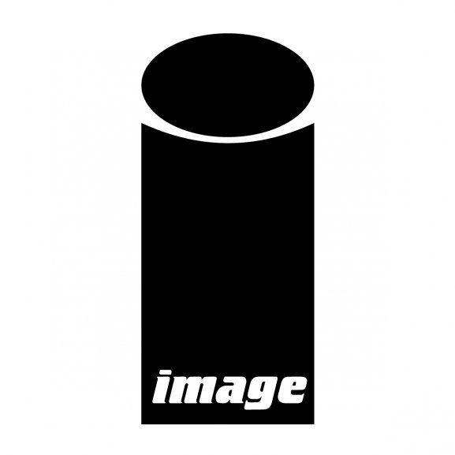
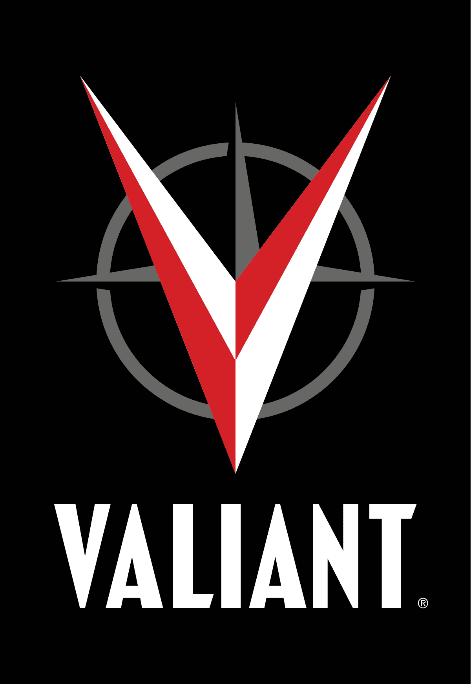

Dark Horse se hizo conocido por primera vez por sus propiedades con licencia: "Star Wars", "Aliens", "Predator" y otros. Desde entonces, se ha hecho conocido por su serie de creadores: "Hellboy", "The Goon", "Sin City", "Groo", "The Umbrella Academy" y más.
Image Comics irrumpió en escena en la década de 1990 con un grupo de artistas de moda cansados de trabajar para el hombre. Querían mantener las ganancias de sus propias creaciones y lanzaron su compañía como un lugar para propiedades de creadores. Encontraron un éxito rápido con personajes como "Spawn", "Youngblood", "Savage Dragon", "Dark Hawk", "Wild CATS", "Witchblade" y otros.
Valiant Comics se lanzó a principios de los 90 como un nuevo universo de superhéroes para la era moderna. Valiant fue iniciado en parte por el ex editor en jefe de Marvel Comics, Jim Shooter, y se enorgullecía de los personajes que tenían superpoderes e historias que tenían una continuidad hermética, a veces cronometrando las interacciones al minuto.
